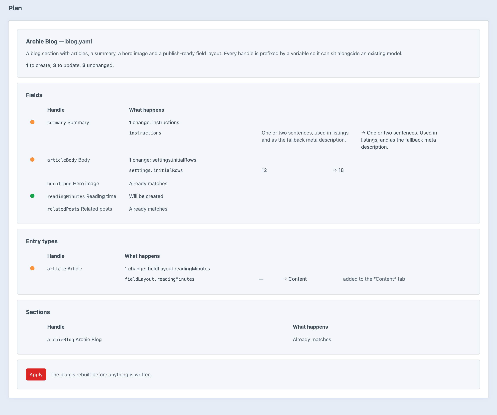
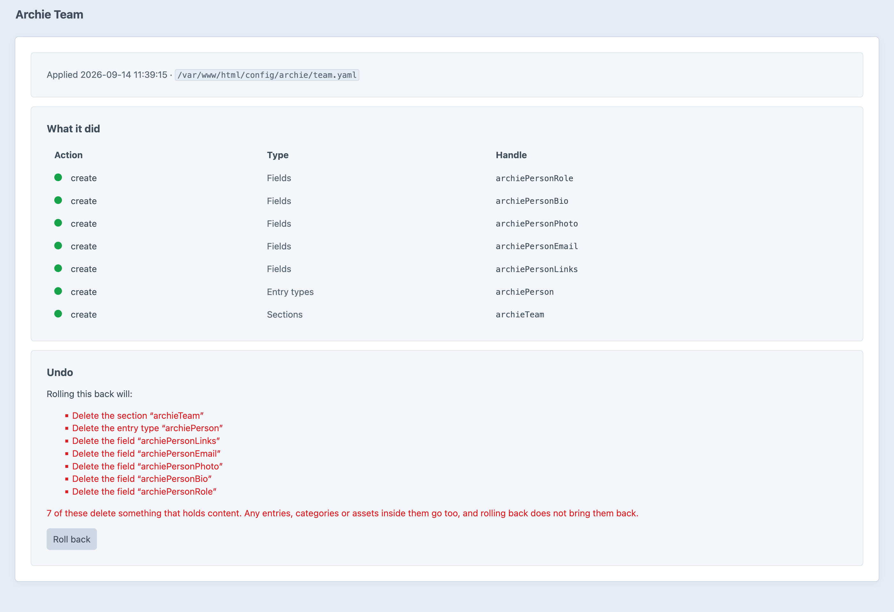
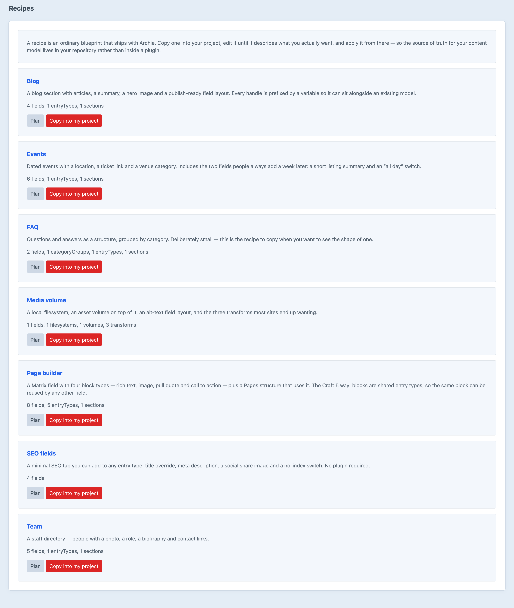

Author Your Content Model as a Document
Project config already syncs a content model between environments. It has never been able to author one. That is the gap Archie fills — the Craft 5 replacement for Architect.
Sections, entry types, fields, volumes, category groups, transforms, user groups and routes — written in a document you can read, review and commit, then built on any install from that one file.
What would be created, what already exists, and which attributes differ — before a single thing is written.
plan is a pull-request checkEvery apply records what each component looked like beforehand. Roll a run back and Archie deletes what it created and restores what it changed, newest first.
archie/history/rollback3 of these delete something that holds content. Any entries, categories or assets inside them go too, and rolling back does not bring them back.
Point Archie at an Architect document and it reads it. blueprint/convert writes the result back out as idiomatic Archie YAML, so you can read it before you trust it.
Reported up front, as errors and warnings — rather than as a half-built content model.
plan, so it belongs in CIEvery component the blueprint names, what would happen to it, and the old value beside the new one.

Every run keeps the list of what it touched, and what rolling it back would cost.

Blog, page builder, team, FAQ, events, SEO fields and a media volume — ordinary blueprints, not templates locked inside a plugin.
